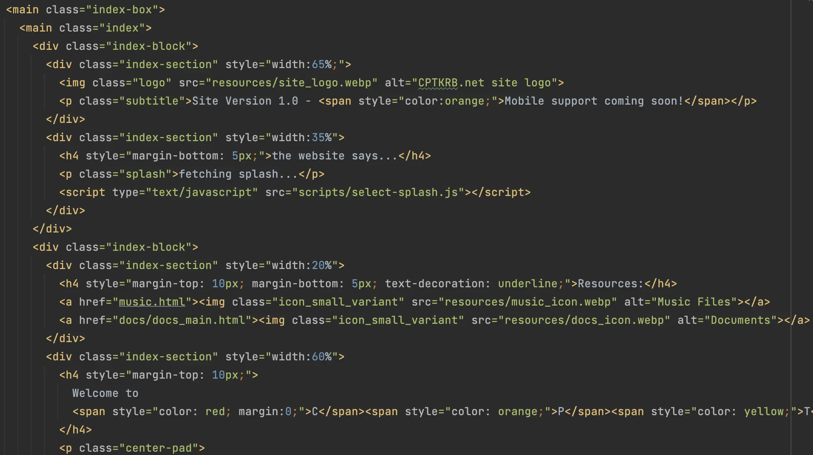
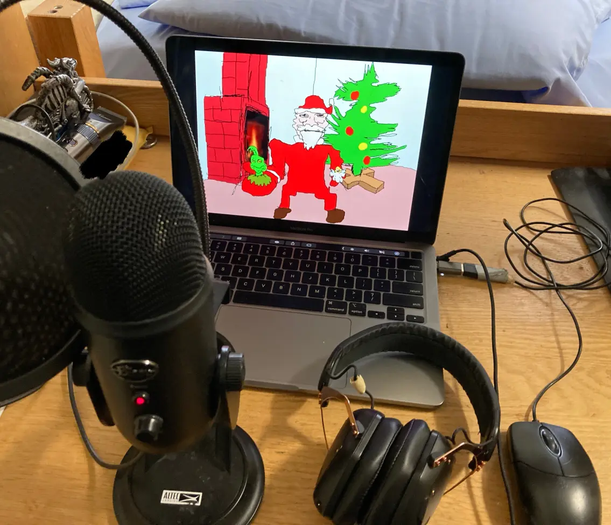

Quick Navigation
An introductionWhy does this place exist?
Some site goals
How the site works (and how I want it to work)
TODO
Conclusion
Hi, and welcome to my site! www.cptkrb.net (stylized CPTKRB.net) is a website originally created by me in August of 2024. Since that time, when I have the time, I've been making periodic updates and additions to develop this site into my own small place on the internet, since I feel we really don't have too many of those anymore. I think it'd best be described as a personal site I was gonna link to a wikipedia page for this but I think you get the gist , a concept that flourished in the early modern web era, bolstered by services like Angelfire, still exists! Tripod also owned by lycos, but thats been the case since time immemorial and GeoCities, gone, but check out Neocities! but has since been under the heel of social media megaconglomorates doing their best to snuff this form of expression out. Personal sites were made for all manner of reasons, and CPTKRB.net is no different; while I'll obviously maintain my present social media, I really wanna build this site into a home. For the time being, and likely for the forseeable future, there won't really be a singular goal for this place. Rather, I'll just use it to share things I've made, try out new ideas, and exist online in much the same way I do in reality.
As stated above, I created CPTKRB.net largely out of a desire to have a place where I can share things and express myself outside the bounds established by modern social media-adjacent sites. I like to do a lot of different things, and there's only so far you can go with blogposting and video streaming. There's such a massive breadth of things available to create and explore today that just don't quite fit into any of the established commercial molds. With CPTKRB.net, I own the domain, I write all the pages and program all the systems, and hopefully soon I'll manage the physical servers as well (see below :3). So, if I need a place to share free music downloads, host scripts I've written, showcase art and computer projects I've been working on, or just share my thoughts, I'll have a home base to do it.
In addition to this, I also kinda just want CPTKRB.net to be something like a web representation of me; I want to be able to share who I am, the things I'm passionate about and the things that give my life meaning, spread across a digital canvas for other travellers to see. The closer I can get this site to expressing who I am, the happier I'll be with it :)
I'm (hopefully) always adding new stuff, improving on old stuff, and developing the site in any way I can. I want this place to be dynamic and ever-changing, and suggestions are always welcomed (within reason).

the DNA of the site
I think it'd be good to have a couple core tenets/principles/goals/whatever for the site to abide by while I'm developing it. Some of these will be more moral and some more utilitarian, but I'll do my best to adhere to them as well as I can. Here's a few to start with, although more can certainly be added in the future.
The inner workings of CPTKRB.net, at the moment, are actually pretty simple. I own the domain cptkrb.net and all of its subdomains and manage them through Route53 (originally GoDaddy). The site also uses a Cloudfront distribution, for which I'm appreciative but also slightly annoyed by since it means I have to invalidate the cache every time I push new changes so I don't have to wait 6 hours for it to auto-refresh. Argh. The site is currently a static site, meaning it consists of a set of HTML documents styled with CSS stylesheets hosted on a webserver somewhere. Your browser shoots off a request to the server, and you're promptly served a flat HTML doc (this site!). Here and there I've written a bit of JavaScript for some of the site's more interactive elements, but overall this is something you could download onto your machine and run without much trouble, provided you also got all the site resources and JSONs and such. Said files are hosted remotely in an S3 bucket configured to operate as a webserver. The AWS synchronicity at play here is largely an effect of me being strapped for time and resources.
To put it simply, I want to change this !!! While the current setup is fine insomuch as it can support the simple stuff I'm currently using it for, there's so much more that I want to do with this site!
Firstly, I want to expand the site's functionality dramatically by implementing backend-frontend architecture. This way, I'll be able to provide capabilities that a flat site can't, and I'll be able to run host-side services and maintain a local database so the site can actually remember things (I really really really want to have some sort of forum system by the end of the year :3)
Secondly, I want to have my own physical server! Currently, and as stated above, the entire site consists of a file structure hosted on some unknown VM in an Amazon server center somewhere. This is not ideal, and is only really the case because my machine whilst going thru college is a tough but weary and somewhat anemic MacBook Pro. still going strong after 5 years! Hosting the server off this would not only be difficult (my fans work hard enough as it is), but also mostly impossible (no wired connection, no single IP). This itself is largely an effect of me having been in college for the past few years, constantly moving house and lacking in the space, time and resources to set up a PC that I'd be happy with.
But this will all change very soon-ish! Naturally, these two changes will likely go hand-in-hand, since it's easier to set up a backend on a machine that's physically in my room. This is going to be one of my big goals once I graduate in the coming year and move into my own apartment (hopefully working my own job as well!) Once this happens, you can expect the site to get a lot more feature-rich and more heavily interactive. Stay tuned to the Site Updates section on the homepage for more information some time soon!
I'll expand on this slightly in the following section.

my glorious setup as of 2022 (all that's changed since then is the microphone)
These are different from the Goals section above, I think. These are things that I plan on working on implementing in the coming weeks, months and years. I'll treat these, as the title suggests, as a TODO list, meaning I'll be crossing things out and adding new ones as needed. This is the only place you're ever gonna see a Scrum board on this site.
Backburner
In Progress
Done!
That's it, I think! Thank you so much for visiting the site and (assuming you've gotten this far) reading this about page! Just like everything else here, this'll be updated as needed. Feel free to explore and use any of the site resources, more are to come in the near future. Have a good morning/day/night/whatever, and keep on truckin.
-- Sierra